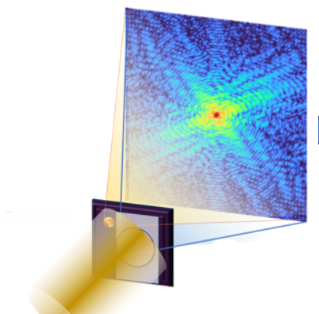
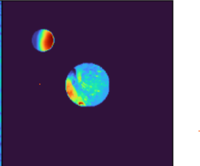
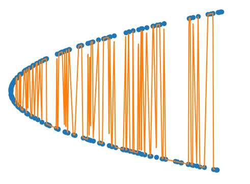
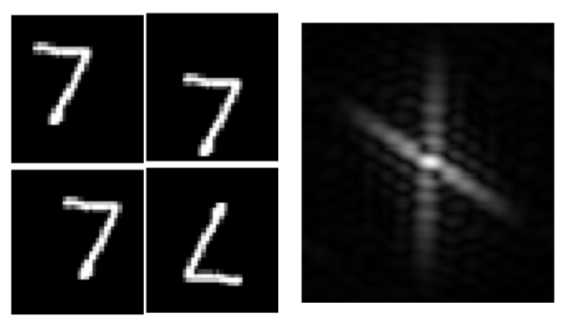
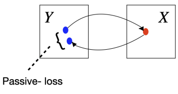
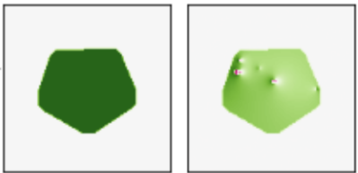
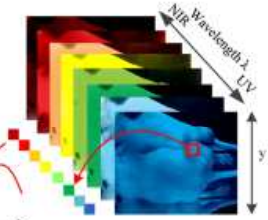
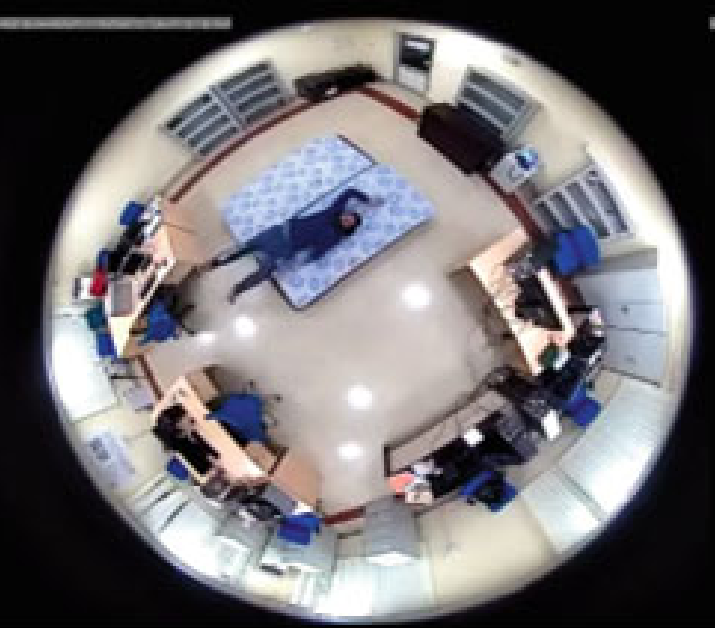

Raunak Manekar
Assistant Professor
Department of Computer Science and Information Systems
BITS Pilani, Goa Campus, India
Raunak's research sits at the intersection of 3D vision and generative AI, with applications to perception, mapping, and teleoperation for embodied agents — from autonomous vehicles to humanoid robots. Before joining BITS Goa, he was a Senior AI Scientist at GE Healthcare in Bengaluru, working on MRI technologies. He earned his PhD in Computer Science from the University of Minnesota Twin Cities under Prof. Jaideep Srivastava, then worked as a postdoctoral researcher in Prof. John Miao's Coherent Imaging Group at UCLA.
Research
International Collaborators at
- National University of Singapore NUS
- Carnegie Mellon University Robotics Institute Pittsburgh, USA
- Minnesota Robotics Institute MnRI · University of Minnesota
- NASA USA
- RMIT University Melbourne, Australia
Industry Partners
- Smith+Nephew Medical technology · Boston, USA
Funding Sources
- ANRF — PM-ECRG Government of India
- NFSG Grant
- Smith+Nephew Industry · Boston, USA
- 3D Vision & Persistent Mapping for Embodied Agents
- Developing algorithms for long-horizon, persistent scene representations that enable autonomous vehicles and humanoid robots to build and maintain reliable 3D maps of dynamic environments.
- Perception for Autonomous Driving & Robotic Teleoperation
- Predictive display and perception systems that make autonomous vehicles and remotely operated robots safer and more reliable, supported by ANRF PM-ECRG funding.
- Generative AI & Computational Imaging
- Learning-based approaches to image reconstruction and computational imaging — phase retrieval, low-dose sensing, and related inverse problems — using generative models and deep priors.
- AI for Reasoning & Foundation Models
- Exploring how large foundation models reason about structure, space, and causality, and how these capabilities can be grounded in embodied, real-world settings.
News
- Oct 2026 Industry research project approved on Persistent Memory for Humanoid Agents in collaboration with Smith&Nephew, a Boston-based medical technology company.
- Jun 2026 Awarded the PM-ECRG grant from ANRF, Government of India, supporting research in autonomous driving vehicles and robotic teleoperation.
- Jun 2026 Delivered an invited talk on Generative AI and Foundation Models for 3D Vision.
- Jun 2026 BITS Pilani, Goa Campus hosted the 3D Vision Summer School (3DVSS).
- Jan 2026 Teaching the popular course Deep Learning: Foundations to Frontier, re-designed around the foundation-model era of AI.
- Oct 2025 Received the NFSG research grant.
- Apr 2025 Presented a paper at ICASSP 2025.
- Mar 2025 Joined BITS Pilani, Goa Campus as Assistant Professor in the Department of Computer Science and Information Systems.
- Dec 2024 Presented a paper at the NeurIPS Machine Learning for Physical Sciences (ML4PS) Workshop in New Orleans, USA.
- Oct 2024 Joined GE Healthcare, Bengaluru as Senior AI Scientist working on MRI technologies.
- Jul 2024 Paper accepted in IEEE Transactions on Image Processing.
Publications
-
Predictive Display for Teleoperation Based on 3D Reconstruction Using Lidar-Camera Fusion IEEE Transactions on Intelligent Transportation Systems, 26(9), 13399–13411, 2025
-

Low-Light Phase Retrieval with Implicit Generative Priors IEEE Transactions on Image Processing, 2024 -

LoDIP: Low-Dose Phase Retrieval with Deep Image Prior NeurIPS Workshop on Machine Learning for Physical Sciences (ML4PS), 2023 -

Breaking Symmetries in Data-Driven Phase Retrieval Computational Optical Sensing and Imaging (COSI), 2021 -

Deep Learning Initialized Phase Retrieval NeurIPS Workshop on Deep Learning and Inverse Problems, 2020 -

End-to-End Learning for Phase Retrieval ICML Workshop on Machine Learning Interpretability for Scientific Discovery, 2020 -

Phase Retrieval Using Single-Instance Deep Generative Prior Optics and Photonics for Sensing the Environment, 2021 -

-

Activity Recognition for Indoor Fall Detection in 360-Degree Videos Using Deep Learning Techniques CVIP Proceedings, Springer, 2018
Background
Positions
-
Assistant Professor
BITS Pilani, Goa Campus — 2025–present -
Senior AI Scientist
GE Healthcare, Bengaluru — 2024–2025 -
Postdoctoral Researcher
Coherent Imaging Group, UCLA
Advisor: Prof. John Miao — 2023–2024 -
PhD, Computer Science
University of Minnesota Twin Cities
Advisor: Prof. Jaideep Srivastava — 2018–2023 -
B.E. (Hons.) Electronics and Instrumentation
BITS Pilani
Teaching at BITS Pilani
- Deep Learning
- Computational Thinking and Programming
Teaching at UMN
- CSCI 5521 Machine Learning Fundamentals
- CSCI 5523 Data Mining
- CSCI 1933 Introduction to Data Structures and Algorithms
Academic Service
- Reviewer, IEEE Transactions on Image Processing
- Reviewer, ARR (October 2026 cycle)
- Reviewer, CVPR 2022; ECCV 2022
- Reviewer, NeurIPS 2022, 2023
- Highlighted Reviewer, ICLR 2022
- Reviewer, AAAI 2022 Workshop on Health Intelligence
- Reviewer, Springer Autonomous Robots
Awards & Honors
- ICLR 2022 Highlighted Reviewer
- NeurIPS 2022 Travel Award — New Orleans
- ICML 2017 Travel Award — Sydney